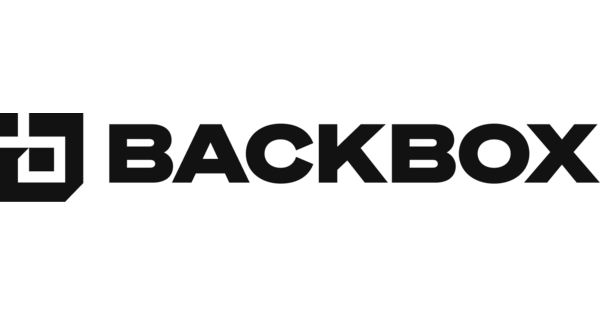

Operating Systems
This page focuses on the main operating systems that were made for hacking and preserving anonimity.
List of some operating systems
Kali Linux

Kali Linux is a Debian-derived Linux distribution designed for digital forensics and penetration testing. It is maintained and funded by Offensive Security.
Kali Linux has approximately 600 penetration-testing programs (tools), including Armitage (a graphical cyber attack management tool), Nmap (a port scanner), Wireshark (a packet analyzer), metasploit (penetration testing framework), John the Ripper (a password cracker), sqlmap (automatic SQL injection and database takeover tool), Aircrack-ng (a software suite for penetration-testing wireless LANs), Burp suite and OWASP ZAP web application security scanners, etc.
This operating system is specifically designed for digital forensics and penetration testing. It is one of the best hacking OS which has over 600 preinstalled penetration-testing applications (cyber-attack performs against computer vulnerability).
Features:
- It can be used for penetration testing.
- This platform is available in 32 bits as well as 64 bits.
- Kali Linux can be updated without the need to download a new version.
- This OS can encrypt the full disk.
- You can easily automate and customize the Kali Linux installation on the network.
- Support for USB live installs.
- It has a forensics mode that can be used for forensic work.
Parrot OS

Parrot is based on Debian's "testing" branch, with a Linux 5.10 kernel. It follows a rolling release development model.
The desktop environments is MATE, and the default display manager is LightDM.
The system is certified to run on devices which have a minimum of 256MB of RAM, and it is suitable for both 32-bit (i386) and 64-bit (amd64) processor architectures. Moreover, the project is available for ARMv7 (armhf) architectures.
In June 2017, the Parrot Team announced they were considering to change from Debian to Devuan, mainly because of problems with systemd.
As of January 21st, 2019, the Parrot team has begun to phase out the development of their 32-bit (i386) ISO.
In August 2020, the Parrot OS officially supports Lightweight Xfce Desktop.
Backbox
BackBox is a penetration test and security assessment oriented Ubuntu-based Linux distribution providing a network and informatic systems analysis toolkit. It includes a complete set of tools required for ethical hacking and security testing.
The main aim of BackBox is providing an alternative, highly customizable and well performing system. BackBox uses the light window manager Xfce. It delivers a fast, effective, customizable and complete experience. It also has a very helpful community behind it.
It includes some of the most used security and analysis Linux tools, aiming for a wide spread of goals, ranging from web application analysis to network analysis, from stress tests to sniffing, also including vulnerability assessment, computer forensic analysis and exploitation.
Part of the power of this distribution comes from its Launchpad repository core, constantly updated to the latest stable version of the most known and used ethical hacking tools. The integration and development of new tools in the distribution follows the open source community, particularly the Debian Free Software Guidelines criteria.
BlackArch Linux

BlackArch is a penetration testing distribution based on Arch Linux that provides a large amount of cyber security tools. It is an open-source distro created specially for penetration testers and security researchers. The repository contains more than 2800 tools that can be installed individually or in groups. BlackArch Linux is compatible with existing Arch Linux installs.
BlackArch is similar in usage to both Parrot OS and Kali Linux when fully installed, with a major difference being BlackArch is based on Arch Linux instead of Debian.
BlackArch only provides the Xfce desktop environment in the "Slim ISO" but provides multiple preconfigured Window Managers in the "Full ISO".
Similar to Kali Linux and Parrot OS, BlackArch can be burned to an ISO image and run as a live system. BlackArch can also be installed as an unofficial user repository on any current Arch Linux installation.
Tails
Tails, or "The Amnesic Incognito Live System," is a security-focused Debian-based Linux distribution aimed at preserving privacy and anonymity. It connects to the Internet exclusively through the anonymity network Tor. The system is designed to be booted as a live DVD or live USB and leaves no digital footprint on the machine unless explicitly told to do so. It can also be run as a virtual machine, with some additional security risks. The Tor Project provided financial support for its development in the beginnings of the project, and continues to do so alongside numerous corporate and anonymous sponsors.
Tails's pre-installed desktop environment is GNOME 3. The system includes essential software for functions such as reading and editing documents, image editing, video watching and printing. Other software from Debian can be installed at the user's behest.
Tails includes a unique variety of software that handles the encryption of files and internet transmissions, cryptographic signing and hashing, and other functions important to security. It is pre-configured to use Tor with multiple connection options. It tries to force all connections to use Tor and blocks connection attempts outside Tor. For networking, it features a modified version of Tor Browser with the inclusion of uBlock Origin, instant messaging, email, file transmission and monitoring local network connections for security.
By design, Tails is "amnesic". It runs in the computer's Random Access Memory (RAM) and does not write to a hard drive or other storage medium. The user may choose to keep files, applications or some settings on their Tails drive in "Persistent Storage". Though the Persistent Storage is encrypted by default, it is not hidden and detectable by forensic analysis. While shutting down, Tails overwrites most of the used RAM to avoid a cold boot attack.